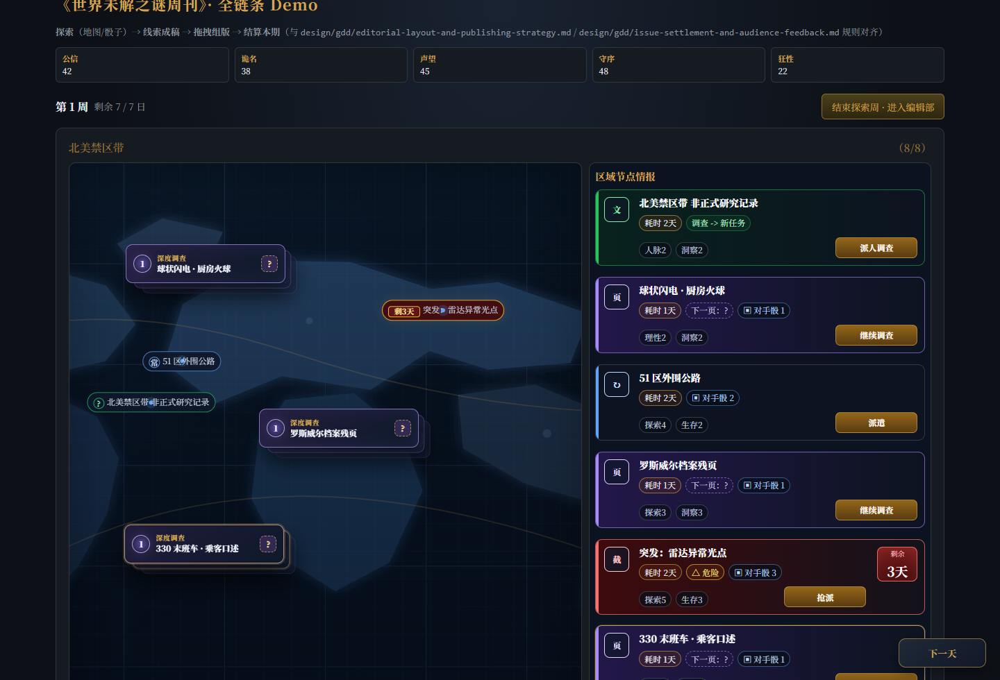
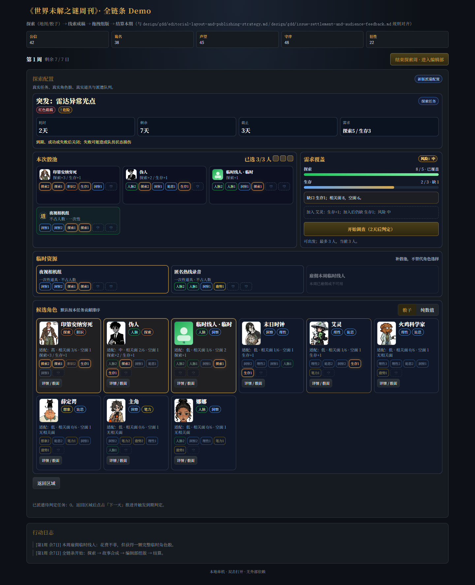
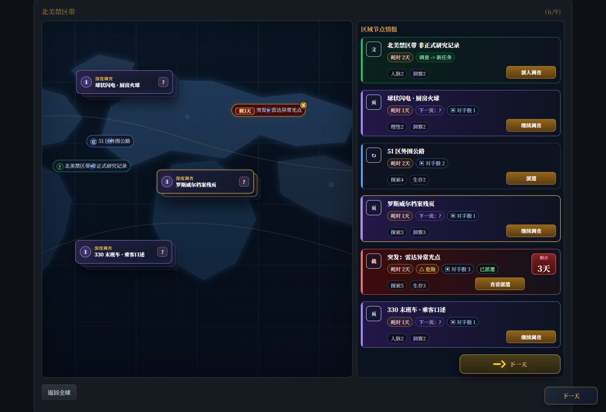
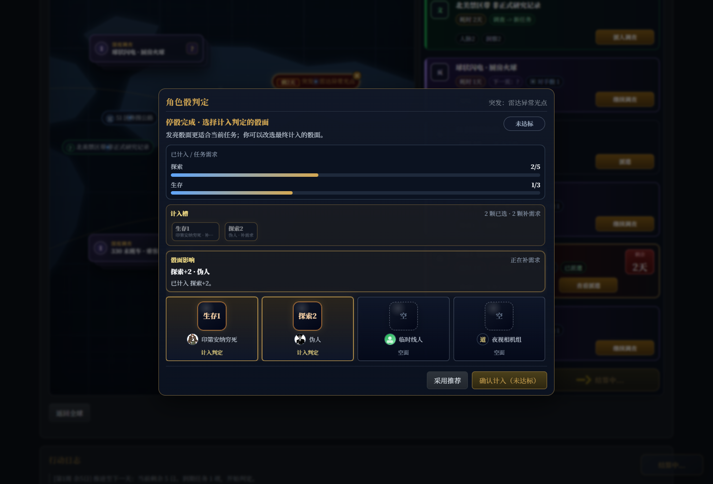
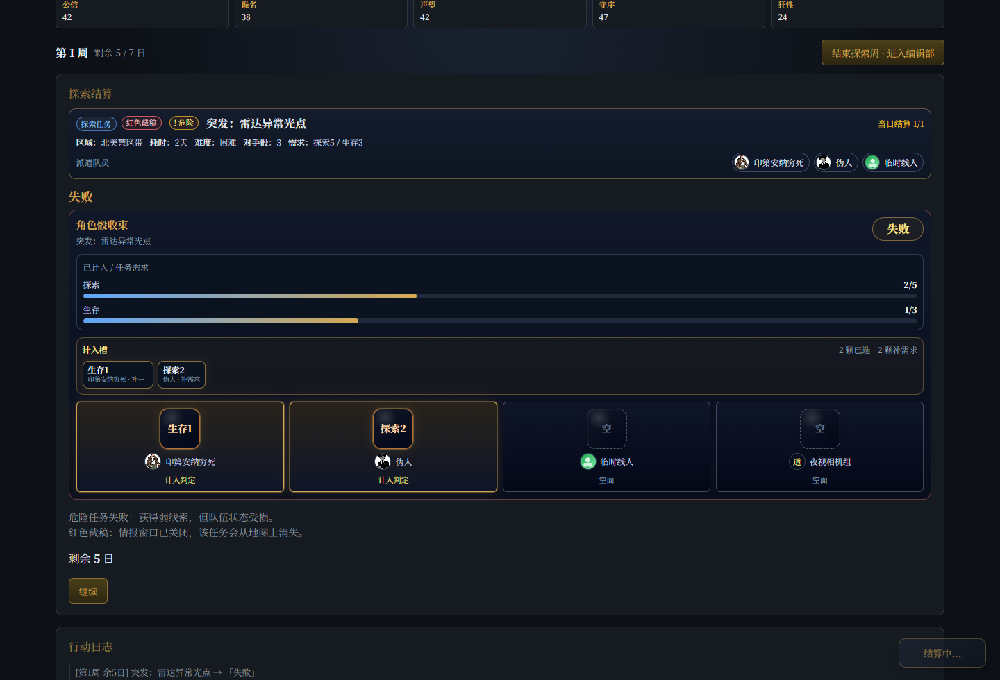
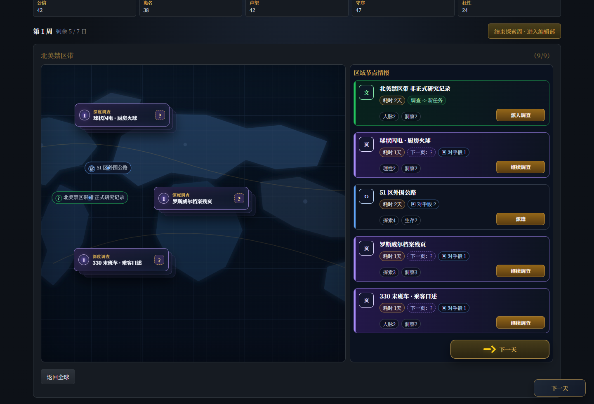
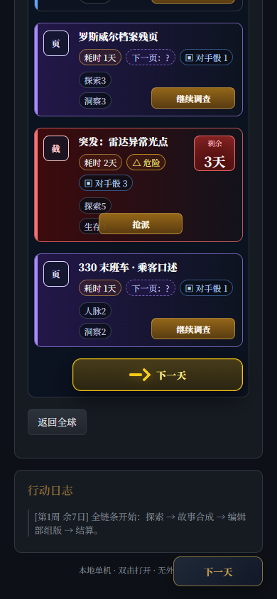
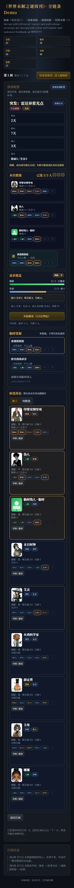

派遣配置全链回归截图
覆盖路径：完整全链默认新版 → 全球地图 → 北美 → 突发任务 → 角色/道具/临时线人 → 开始调查 → 下一天 → 到期结算 → 回区域。生成时间：2026-05-13。
关键断言：配置页隐藏浮动下一天；已选道具进入本次骰池；到期掷骰包含已消耗的一次性道具骰和临时线人；红色截稿任务结算后关闭；390px 窄屏无横向滚动。
{kind=link}

{kind=link}

{kind=link}

{kind=link}

{kind=link}

{kind=link}

{kind=link}

{kind=link}

自动断言摘要
{
"setupAudit": {
"hasNewShell": true,
"nextHidden": true,
"hasSummary": true,
"hasPool": true,
"hasResources": true,
"hasRisk": true,
"hasCandidates": true,
"actionText": "开始调查（2天后判定）"
},
"selectedAudit": {
"selectedStaff": [
"s1",
"s6",
"temp_stringer"
],
"poolText": "本次骰池\n已选 3/3 人 \n印第安纳穷死\n探索+3 / 生存+1\n探索2\n探索1\n胆识2\n生存1\n洞察1\n空\n伪人\n探索+2 / 生存+1\n人脉2\n探索2\n洞察1\n诡思1\n生存1\n空\n临时线人 · 临时\n探索+1\n人脉2\n人脉1\n洞察1\n探索1\n空\n空\n道\n夜视相机组\n不占人数 · 一次性\n洞察1\n洞察2\n探索1\n探索1\n空\n空\n需求覆盖\n风险：中\n探索\n8 / 5 · 已覆盖\n生存\n2 / 3 · 缺 1\n缺口 生存1；相关面 8，空面 6。\n加入 艾灵：生存+1；加入后仍缺 生存1；风险 中\n开始调查（2天后判定）\n可出发；最多 3 人，当前 3 人。",
"runDisabled": false
},
"assignedAudit": {
"buttonText": "查看派遣",
"hasAssignedChip": true,
"hasAssignedMark": true
},
"diceAudit": {
"hasTool": true,
"hasTemp": true,
"diceCount": 4
},
"rewardClicks": 2,
"retiredAudit": {
"hasTempUfoButton": false,
"hasTempUfoPoint": false
},
"mobileAudit": {
"width": 390,
"scrollWidth": 390,
"hasHorizontalOverflow": false,
"hasPool": true,
"hasAction": true,
"overflowing": []
}
}